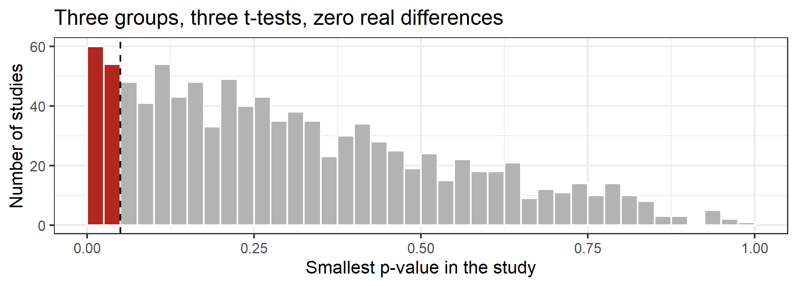
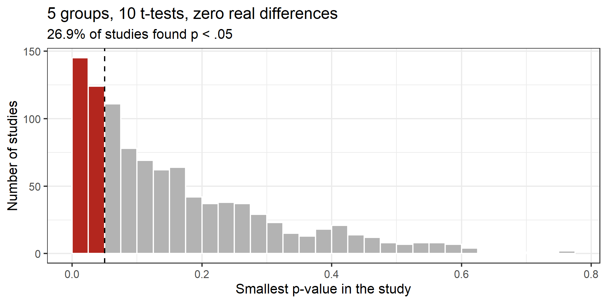
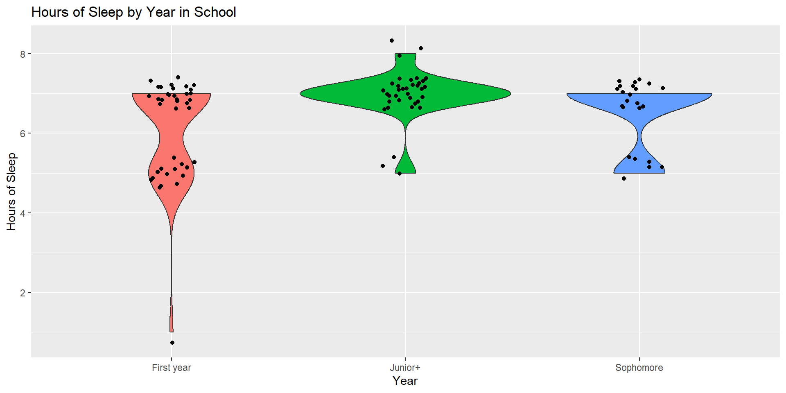

library(here)
library(tidyverse)
library(rio)
library(broom)
library(psych)
library(emmeans)
options(scipen = 999)
tipi <- import(here("files", "data", "final_tipi.csv")) %>%
# case_when(variable of interest == old_value ~ new value)
mutate(year_group = case_when(year_school == 1 ~ "First year",
year_school == 2 ~ "Sophomore",
year_school >= 3 ~ "Junior+"))Week 06: Comparing Groups as Regression
Date: October 1, 2026
Today…
Groups, as lines
- Why a t-test is a regression (we prove it properly this time)
- Dummy coding: how R turns a group into a number
- Three or more groups: ANOVA is the same machine
- Why not just run a bunch of t-tests?
- Effect size: d, R², and which one to report
Where we left off
Last week, in Part C of the activity:
- You ran a t-test on two groups and got t = −2.29, p = .022
- You ran
lm()on the same two groups and got the same t and p - The intercept turned out to be one group’s mean, and the slope the difference between the means
Today: why, and what happens when there are three groups.
Our data: 😴🏫
We are going back to the TIPI dataset from Week 3 — the one with 99 students, their personality scores, and how much they sleep.
Research question: Do students further along in school sleep differently than first-years?
Part 1: Two Groups
Start with two
# A tibble: 2 × 4
year_group n M SD
<chr> <int> <dbl> <dbl>
1 First year 39 6.13 1.28
2 Junior+ 37 6.92 0.640Juniors and above sleep about 0.79 hours — roughly 47 minutes — more per night. Is that more than noise?
The test you already know
Two Sample t-test
data: hours_of_sleep by year_group
t = -3.3751, df = 74, p-value = 0.001178
alternative hypothesis: true difference in means between group First year and group Junior+ is not equal to 0
95 percent confidence interval:
-1.2575205 -0.3239071
sample estimates:
mean in group First year mean in group Junior+
6.128205 6.918919 t(74) = −3.38, p = .001.
Students ranked as juniors or higher reported significantly greater amounts of sleep (M = 6.92, SD = 0.64) compared to freshman (M = 6.13, SD = 1.28; p = .001).
The same question as a line
Call:
lm(formula = hours_of_sleep ~ year_group, data = two_years)
Residuals:
Min 1Q Median 3Q Max
-5.1282 0.0811 0.0811 0.8718 1.0811
Coefficients:
Estimate Std. Error t value Pr(>|t|)
(Intercept) 6.1282 0.1635 37.490 < 0.0000000000000002 ***
year_groupJunior+ 0.7907 0.2343 3.375 0.00118 **
---
Signif. codes: 0 '***' 0.001 '**' 0.01 '*' 0.05 '.' 0.1 ' ' 1
Residual standard error: 1.021 on 74 degrees of freedom
Multiple R-squared: 0.1334, Adjusted R-squared: 0.1217
F-statistic: 11.39 on 1 and 74 DF, p-value: 0.001178Important
Same t (the sign just depends on which group R treats as “first”). Same p. The t-test is a regression with one categorical predictor.
But how do you put a group in an equation?
\[\hat{Y_i} = b_0 + b_1X_i\]
\(X\) has to be a number. “Junior+” is not a number.
So we make one. Dummy coding:
| Group | coded as |
|---|---|
| First year | 0 |
| Junior+ | 1 |
That’s it. That is the whole trick.
Read the equation twice
\[\widehat{sleep} = 6.13 + 0.79(junior^+)\]
First year → plug in 0
\[6.13 + 0.79(0) = 6.13\]
The intercept is the mean of the group coded 0.
Junior+ → plug in 1
\[6.13 + 0.79(1) = 6.92\]
The slope is the difference between the group means.
A “line” through a predictor with two values can only ever produce two predicted values: the two group means.
The group that gets the 0 is the reference
R picks it for you: alphabetically. “First year” beats “Junior+”.
Call:
lm(formula = hours_of_sleep ~ year_group, data = .)
Residuals:
Min 1Q Median 3Q Max
-5.1282 0.0811 0.0811 0.8718 1.0811
Coefficients:
Estimate Std. Error t value Pr(>|t|)
(Intercept) 6.9189 0.1678 41.227 < 0.0000000000000002 ***
year_groupFirst year -0.7907 0.2343 -3.375 0.00118 **
---
Signif. codes: 0 '***' 0.001 '**' 0.01 '*' 0.05 '.' 0.1 ' ' 1
Residual standard error: 1.021 on 74 degrees of freedom
Multiple R-squared: 0.1334, Adjusted R-squared: 0.1217
F-statistic: 11.39 on 1 and 74 DF, p-value: 0.001178The intercept becomes 6.92, the slope flips to −0.79, and t, p, R² and every residual stay exactly where they were.
What about Welch?
t.test() defaults to Welch’s t-test (unequal variances). lm() always assumes equal variances, like Student’s t-test.
Look back at those SDs: 1.28 for first-years, 0.64 for juniors+. The first-years are twice as spread out.
Note
That is exactly the situation Welch was built for. Here the groups are nearly the same size (39 vs 37), so the two tests agree — but with unequal n and unequal spread, they would not. Know which one you ran.
Effect size: two flavors
Cohen's d | 95% CI
--------------------------
-0.77 | [-1.24, -0.31]
- Estimated using pooled SD.# A tibble: 1 × 3
r.squared statistic p.value
<dbl> <dbl> <dbl>
1 0.133 11.4 0.00118- Cohen’s d = −0.78 (0.78 in magnitude; the sign just reflects group order) — the difference in standard deviations. “How separated are the groups?”
- R² = .133 — the proportion of variance in sleep accounted for by year group. “How much does knowing the group help?”
Same model. Report d for a two-group comparison; R² scales up to everything we do next.
🛠️ Activity Stop 1: Same Question, Three Ways
Tip
Part A: Follow along · ~20 min · Pairs
New data — the Pokémon set from your in-class check:
- Run the t-test, then the regression, on the same two groups
- Find the intercept in the group means
- Flip the reference group and predict what will change before you run it
☕ Break
10 minutes
When we come back: three groups.
Part 2: Three or More Groups
Put the sophomores back
# A tibble: 3 × 4
year_group n M SD
<chr> <int> <dbl> <dbl>
1 First year 39 6.13 1.28
2 Junior+ 37 6.92 0.640
3 Sophomore 23 6.48 0.898Sophomores land in the middle. Now we have three means — and three possible comparisons.
Why not just run three t-tests? 🤔
first-year vs sophomore · first-year vs junior+ · sophomore vs junior+
Each test has a 5% false-positive rate. We set that when we accept our cutoff of p < .05. If the three tests were independent, the chance of at least one false positive would be:
\[1 - (1 - .05)^3 = .143\]
They are not independent — the three tests reuse the same three groups — so that formula overstates it a bit. Let’s just check.
Build a world where nothing is true
Same idea as the Inference Machine in Week 4: simulate studies where we know the null is true, then count how often we fool ourselves.
Code
set.seed(640)
one_study <- function(n = 30) {
# three groups drawn from the SAME population: no real differences
a <- rnorm(n)
b <- rnorm(n)
c <- rnorm(n)
# run all three pairwise t-tests
p_ab <- t.test(a, b, var.equal = TRUE)$p.value
p_ac <- t.test(a, c, var.equal = TRUE)$p.value
p_bc <- t.test(b, c, var.equal = TRUE)$p.value
# keep the smallest p-value
min(p_ab, p_ac, p_bc)
}
smallest_p <- replicate(1000, one_study())
# how often do we get at least one "significant" result by chance?
mean(smallest_p < 0.05)[1] 0.1141,000 studies where nothing was going on
Code
tibble(smallest_p = smallest_p) %>%
ggplot(aes(x = smallest_p, fill = smallest_p < .05)) +
geom_histogram(binwidth = .025, boundary = 0, color = "white") +
geom_vline(xintercept = .05, linetype = "dashed") +
scale_fill_manual(values = c("grey70", "#B3261E"), guide = "none") +
labs(x = "Smallest p-value in the study", y = "Number of studies",
title = "Three groups, three t-tests, zero real differences") +
theme_bw(base_size = 16)
About 12% of these studies produced at least one “significant” difference. None of them were real.
It gets worse fast
Code
set.seed(640)
num_groups <- 5
sample <- 30
one_study <- function(n = 30, k = 3) {
# k groups, all drawn from the SAME population - no real differences
d <- tibble(group = rep(LETTERS[1:k], each = n),
y = rnorm(n * k))
# run every pairwise t-test, keep the smallest p-value
combn(LETTERS[1:k], 2, simplify = FALSE) %>%
map_dbl(function(pair) {
t.test(y ~ group, data = filter(d, group %in% pair),
var.equal = TRUE)$p.value
}) %>%
min()
}
smallest_p <- map_dbl(1:1000, function(i) one_study(sample, num_groups))
prop_sig <- mean(smallest_p < .05)
tibble(smallest_p = smallest_p) %>%
ggplot(aes(x = smallest_p, fill = smallest_p < .05)) +
geom_histogram(binwidth = .025, boundary = 0, color = "white") +
geom_vline(xintercept = .05, linetype = "dashed") +
scale_fill_manual(values = c("grey70", "#B3261E"), guide = "none") +
labs(x = "Smallest p-value in the study",
y = "Number of studies",
title = paste(num_groups, "groups,", choose(num_groups, 2),
"t-tests, zero real differences"),
subtitle = paste0(round(prop_sig * 100, 1),
"% of studies found p < .05")) +
theme_bw(base_size = 16)
It gets worse fast
| Groups | Pairwise tests | False-positive rate |
|---|---|---|
| 2 | 1 | 4.9% ← as advertised |
| 3 | 3 | 12.3% |
| 4 | 6 | 20.2% |
| 5 | 10 | 29.2% |
20,000 simulated studies per row, n = 30 per group, all groups from the same population.
- The naive formula (\(1-.95^{10}\) = 40% for five groups) overstates it, because the tests overlap
- But the honest number is still six times the rate you think you are running
This is why we start with one omnibus test, and why pairwise comparisons get corrected.
Two groups needed one dummy. Three need two.
| Group | Junior+ |
Sophomore |
|---|---|---|
| First year (reference) | 0 | 0 |
| Junior+ | 1 | 0 |
| Sophomore | 0 | 1 |
- \(k\) groups → \(k - 1\) dummy variables
- Every group gets a unique pattern of 0s and 1s
- The reference group is the one that is all zeros
R builds these columns for you the moment it sees a factor.
The model
Call:
lm(formula = hours_of_sleep ~ year_group, data = tipi)
Residuals:
Min 1Q Median 3Q Max
-5.1282 0.0811 0.0811 0.8718 1.0811
Coefficients:
Estimate Std. Error t value Pr(>|t|)
(Intercept) 6.1282 0.1592 38.501 < 0.0000000000000002 ***
year_groupJunior+ 0.7907 0.2281 3.466 0.000791 ***
year_groupSophomore 0.3501 0.2613 1.340 0.183570
---
Signif. codes: 0 '***' 0.001 '**' 0.01 '*' 0.05 '.' 0.1 ' ' 1
Residual standard error: 0.994 on 96 degrees of freedom
Multiple R-squared: 0.1114, Adjusted R-squared: 0.0929
F-statistic: 6.018 on 2 and 96 DF, p-value: 0.003449Reading it
\[\widehat{sleep} = 6.13 + 0.79(junior^+) + 0.35(sophomore)\]
- Intercept 6.13 = mean sleep of first-years (the reference)
- +0.79 = juniors+ sleep 0.79 hours more than first-years, t(96) = 3.47, p < .001
- +0.35 = sophomores sleep 0.35 hours more than first-years, t(96) = 1.34, p = .184
- Every coefficient is a comparison to the reference group — not to each other
So where is sophomore vs junior+? It isn’t in this table.
The omnibus F test
At the bottom of that output:
F(2, 96) = 6.02, p = .003, R² = .111
- \(H_0\): all three population means are equal
- A small p says at least one group differs — it does not say which
- This is the ANOVA you already know. Same model, different summary.
ANOVA is regression
Df Sum Sq Mean Sq F value Pr(>F)
year_group 2 11.89 5.946 6.018 0.00345 **
Residuals 96 94.85 0.988
---
Signif. codes: 0 '***' 0.001 '**' 0.01 '*' 0.05 '.' 0.1 ' ' 1Same F. Same p. aov() is a wrapper around lm() that prints a sums-of-squares table instead of coefficients.
Note
R² here is what ANOVA calls \(\eta^2\) (eta squared): 11.1% of the variance in sleep is accounted for by year in school.
Getting the comparison the table hid
contrast estimate SE df t.ratio p.value
First year - (Junior+) -0.791 0.228 96 -3.466 0.0008
First year - Sophomore -0.350 0.261 96 -1.340 0.1836
(Junior+) - Sophomore 0.441 0.264 96 1.670 0.0983- First year vs Junior+: significant (Tukey p = .002)
- First year vs Sophomore: not significant (p = .38)
- Sophomore vs Junior+: not significant (p = .22)
The omnibus test was significant because of one of the three comparisons. Without the pairwise step you would not know which.
Writing it up
Average nightly sleep differed significantly across year in school (F(2, 96) = 6.02, p = .003, \(\eta^2\) = .11). First-year students reported the least sleep (M = 6.13, SD = 1.28), followed by sophomores (M = 6.48, SD = 0.90) and juniors or above (M = 6.92, SD = 0.64). Tukey-adjusted comparisons indicated that juniors and above slept significantly more than first-year students (p = .002); no other pairwise comparison was significant.
Tip
Notice the shape: omnibus test → group descriptives → which pairs differ. In that order, every time.
And the obvious caveat
Nobody was randomly assigned to be a first-year.
- Maybe upper-year students have more control over their schedules
- Maybe the heavy-sleep-deprivation majors drop out before junior year
- Maybe first-years live in noisier housing
The model is fine. The causal claim is not available — same lesson as Lab 6. Next week’s lab is the exception that proves the rule: a study where people were randomly assigned.
Did we forget to visualize??

The big picture so far
| What you want | The model | What people call it |
|---|---|---|
| Continuous predictor | y ~ x |
Regression |
| 2 groups | y ~ group |
t-test |
| 3+ groups | y ~ group |
One-way ANOVA |
| Several predictors | y ~ x1 + x2 |
Multiple regression (Week 8) |
One machine. You are just changing what goes on the right-hand side.
🛠️ Activity Stop 2: Parts B & C
Tip
Same Question, Three Ways · ~30 min · Pairs
Part B: three Pokémon types, from descriptives to a written-up result
Part C: choose a reference group on purpose, and see what changes (and what doesn’t)
For next time
📋 Lab 7 — Does the Therapy Work?, due Tuesday 10/6 at 11:59pm
- A real three-arm randomized trial: Individual CBT, Group CBT, Waitlist
- You fit the model, pick the reference group, and write the results
- Five participants dropped out — you will have to decide what to say about that
📖 Chapter 8 — ROS · Chapters 5 & 14.5 — ST · Chapter 15.4 — LSR
Note
Heads up: the midterm project is handed out in two weeks (10/15) and due 10/27. Lab 8 is due Tue 10/13, which is during Fall Break — submit it online as usual.